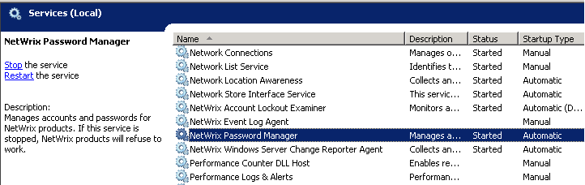
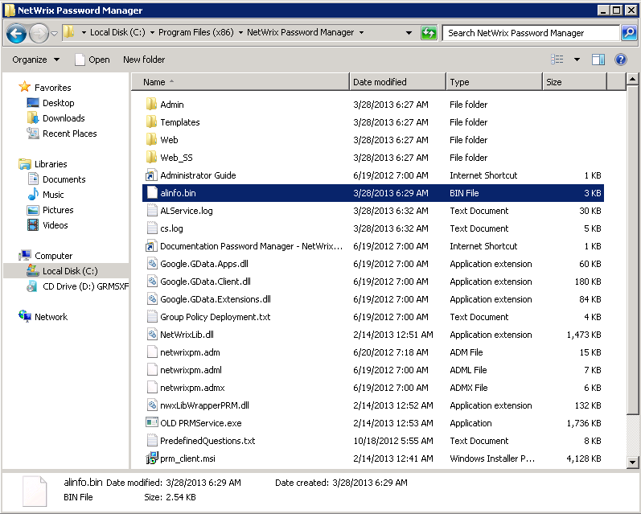

Netwrix Password Manager stopped working after a reboot; Self-Service Portal shows the
following error: "Fatal error. Please make sure that the service Netwrix Password Manager is
running and available. ASP error " Cannot Create Object".

The error occurs because web-service cannot connect to the Netwrix Password Manager service. It can happen if the Netwrix Password Manager service does not work - the service may be stopped, or the service settings may be corrupted. Netwrix Password Manager stores all settings and service information in the "alinfo.bin" file. The product constantly writes data to it on any performed action. Unexpected interruption of the Netwrix Password Manager service (PRMService.exe process) during a writing operation can cause corruption of this file, which results in the ASP error on the web portals. With DMZ setup such error can also occur if DCOM settings are incorrect and web-service is trying to connect to the machine where Password Manager service does not exist.
The error occurs because web-service cannot connect to the Netwrix Password Manager service. It can happen if the Netwrix Password Manager service does not work - the service may be stopped, or the service settings may be corrupted. Netwrix Password Manager stores all settings and service information in the "alinfo.bin" file. The product constantly writes data to it on any performed action. Unexpected interruption of the Netwrix Password Manager service (PRMService.exe process) during a writing operation can cause corruption of this file, which results in the ASP error on the web portals. With DMZ setup such error can also occur if DCOM settings are incorrect and web-service is trying to connect to the machine where Password Manager service does not exist.
First of all make sure that the Netwrix Password Manager service is started.

If you have DMZ setup - verify DCOM settings are as per paragraph 4.4 of
Admin guide
If the service runs and DCOM settings are correct, then you need to recreate the
alinfo.bin file and configure all the product settings again:
- Stop the Netwrix Password Manager service via the Services snap-in.
- Navigate to the Netwrix Password Manager installation directory.
- Remove or rename the alinfo.bin file.
- Start the Netwrix Password Manager service via the Services snap-in.
- Go to the Administrative portal and configure Netwrix Password Manager.
As a result, the alinfo.bin file will be recreated, but all users
enrollment information will stay untouched.
